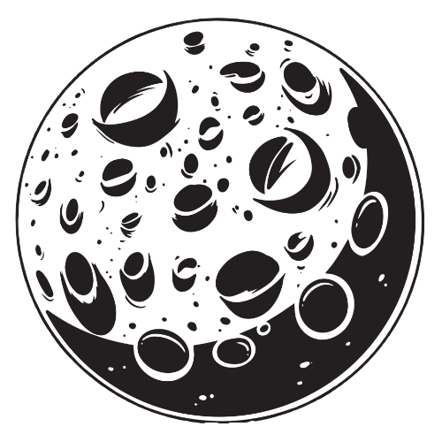

Natal Chart AI Generated Image
What is a Natal Chart?
The Astrological Birth Chart, or Natal Chart, uses the exact date, time, and location of your birth to re-create a snapshot of the sky at your precise moment of arrival.¹
In your Natal Chart you'll find the exact position of the planets, astral bodies, and zodiac signs at the time you were born. All of these positions and aspects are some of the "parts" that make up a "whole"--you!²
If you don't know your Natal Chart you can use this free calculator.
What does the planets represent?
The Sun
The Sun represents the Self, one's way of being in the world. It can represent, on different levels, both the ego and the higher Self or soul purpose.⁴
The Moon
The moon rules the moods and emotions. The placement of the moon in your chart determines your inner self; it shapes your soul and what you need to feel emotionally secure. It controls what goes on below the surface of your personality.³
Mercury

Mercury rules expression and communication. It tells us how we process information, how we think, and how we learn. It governs the way you prefer to communicate and whether you prefer small or big groups of people.³
Venus
Venus rules love and relationships. Your Venus sign determines how you give and feel love in both romances and friendships. It also influences what you find beautiful.³